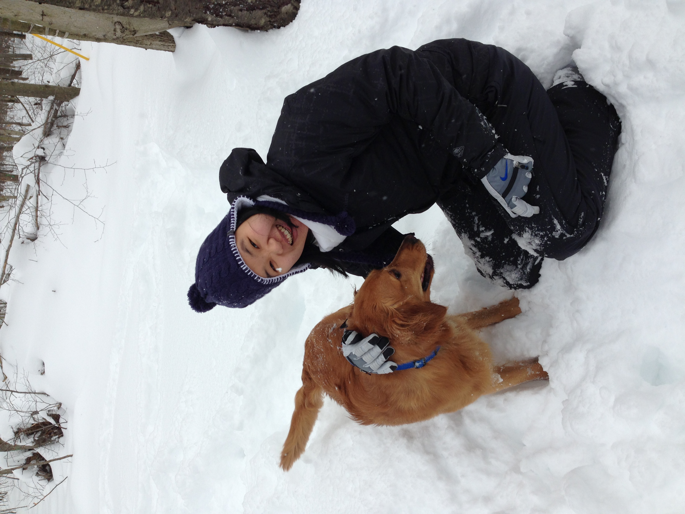

ABOUT BOW
A camera is a good excuse to go somewhere.
This is my personal corner of the internet — a place for photographs, travel memories, and the things that catch my attention.
Photography started as a way to remember places. Over time it became a way of looking: slowing down, noticing light, and keeping the little moments that would otherwise disappear.
View the photographs ↗